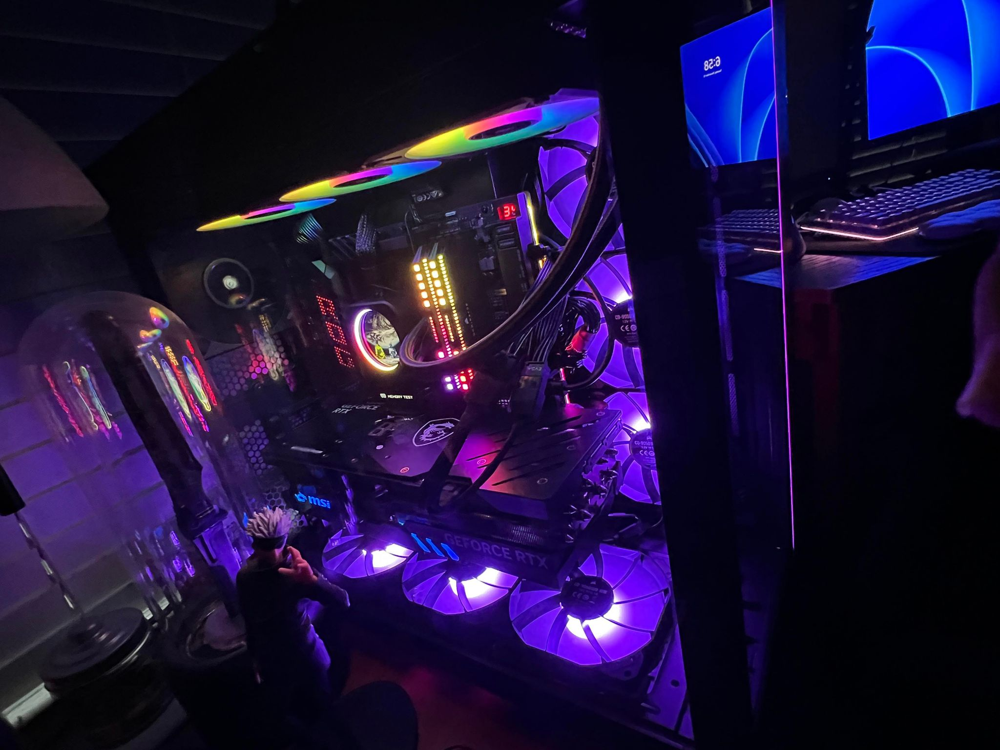

Hey! Thanks for checking out my website. My name is Andres, but I usually go by Andrew. I am 23 years old and I'm a self-taught programmer. Ever since I was a kid, I've always been huge on video games, modding, tech, and design. I've worked as a hardware & software repair technician for five years now, and a couple of years ago I began my journey in coding. Being a programmer always seemed like the natural career path for me, yet it took some time to jump into learning the fundamentals. It just always seemed so alien and intimidating. In spite of that, I decided to give it a shot and now, after years of hard work, I've come to know all the fundamentals of frontend and backend programming, specialize in Java and JavaScript, and am very familiar with Python, C#, and C++! This website is even built from the ground-up using HTML and CSS!
I pride myself in my consistency and ability to stay level headed no matter what and am always ready to give it my 101%. Every day I strive to learn new information, new functions, new ways to optimize. Always curious and excited for updates or news in the field. Self-sufficient and resourceful, yet not afraid to ask for help when needed. I'm the kind of person to constantly go out of his way in order to figure out the necessary information to a solution purely for the enjoyment of it. Obsessed with knowledge and self-improvement. I approach bugs and other such issues as a chance to learn something new and hone my abilities. I am very communicative and always look forward to feedback so I can know what to work on. Due to the nature of my work for the last five years, I've also come to excel at narrowing down problems and fixing them. Combined with my programming skills, I truly believe I will be someone crucial to your team. I am very studious and meticulous even outside of work, so I am always improving even off the clock. This is not just a job to me, but my life. There is nothing more cathartic to me than coming up with a solution to a problem most would rather ignore.
Phone number: (956)333-3667 My email: hanato21@icloud.com My social media links are at the top left corner, so you can go ahead and click on them to get more info. I also decided to include a picture with my DSi and my PC build just for fun. :-) Thanks for reading and I hope to hear from you. Stay safe!
